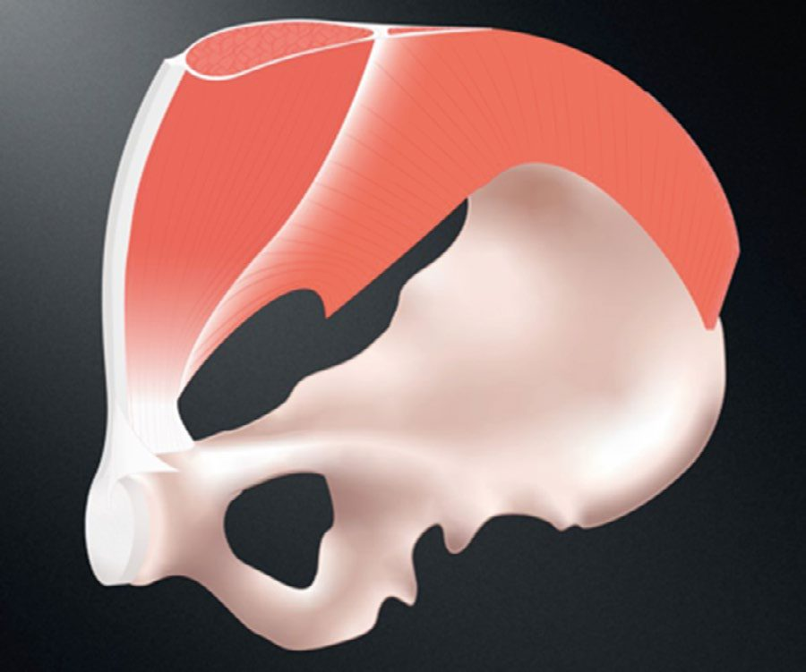
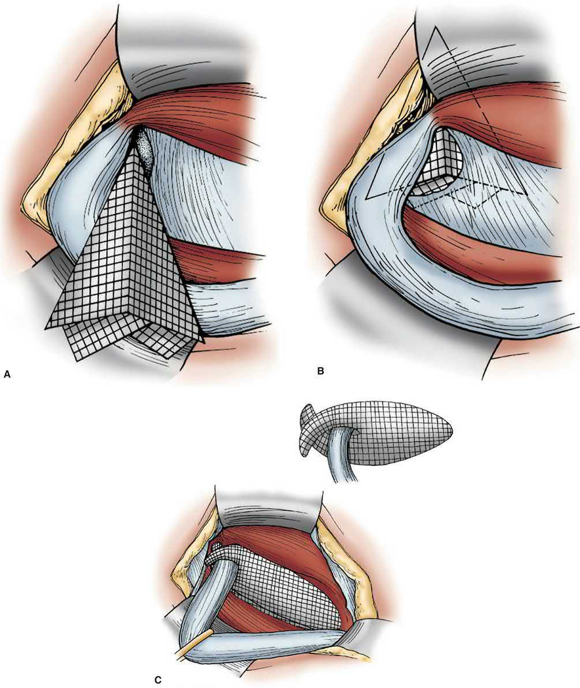
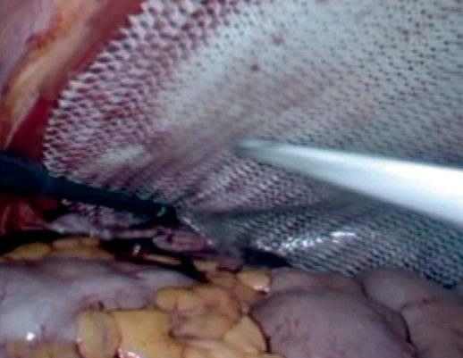
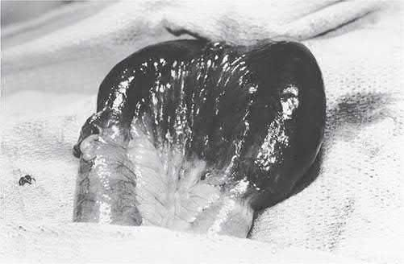

Inguinal Hernia
Summary
- Inguinal hernia is the most common abdominal wall hernia and the most common hernia in both men and women, accounting for around 75% of abdominal wall hernias and around 95% of groin hernias [1].
- It is roughly 9-10 times more common in men than women [1][2], and the lifetime occurrence of a groin hernia is 27-43% in males and 3-6% in females [3].
- Hernias are classified as indirect (lateral to the inferior epigastric vessels, usually congenital from a patent processus vaginalis) or direct (medial, within Hesselbach's triangle, acquired from floor weakness).
- Two-thirds are indirect [3][4].
- Definitive treatment is surgical repair, most commonly with tension-free mesh, performed open (Lichtenstein) or laparoscopically (TEP/TAPP) [2].
- Inguinal hernia repair is one of the most common operations performed worldwide, with over 20 million done annually [3].
- There is no NICE clinical guideline on hernia.
- NICE received a referral from the Department of Health in March 2015 to develop a clinical guideline on the diagnosis and management of hernia, deferred it in June 2015 to prioritise another topic, and formally discontinued it on 21 February 2018, recording that it is "not currently planned to be recommissioned" [5].
- UK practice is therefore governed by three separate documents that do not fully agree with one another: NICE technology appraisal TA83 on laparoscopic repair, the RCS/ASGBI/British Hernia Society commissioning guide, and the Academy of Medical Royal Colleges Evidence-Based Interventions guidance on minimally symptomatic hernia [6][7][8].
Definition
- A hernia is an area of weakness or complete disruption of the fibromuscular tissues of the body wall through which intra-abdominal or extraperitoneal structures protrude [1].
- An inguinal hernia specifically protrudes through the inguinal canal, either through the deep (internal) inguinal ring (indirect) or through the floor of the canal within Hesselbach's triangle (direct) [2].
- Certain physical signs are common to all hernias but are not always present: they occur at congenital or acquired weak spots in the abdominal wall, most can be reduced, and most have an expansile cough impulse, the last two may be absent if the neck of the sac is narrow or the contents are not bowel [9].
Pathophysiology
The inguinal canal and Hesselbach's triangle
- As the testis descends from the abdominal cavity to the scrotum it passes through a defect in the transversalis fascia, the deep inguinal ring, taking a tube of peritoneum (the processus vaginalis) with it; this normally obliterates but frequently fails to close completely, and persistence of this patent processus is the anatomical substrate of a congenital indirect hernia [2].
- An indirect hernia is lateral to the inferior epigastric vessels and can track along the line of the processus all the way into the scrotum, whereas a direct hernia arises medial to the vessels from acquired stretching and weakening of the transversalis fascia within Hesselbach's triangle and is broadly based and less likely to strangulate [2].
- Hesselbach's triangle marks the margins of the floor of the inguinal canal: the inferior epigastric vessels superolaterally, the rectus sheath medially, and the inguinal and pectineal ligaments inferiorly [3].
- Because the sac of an indirect hernia descends obliquely alongside the vas deferens inside the spermatic cord, the three fascial layers of the cord funnel it towards the scrotum.
- A direct sac begins medial to the epigastric artery and outside the cord, so it has no easy path to the scrotum, which it consequently rarely enters [9].
- The transversalis fascia and the transversus abdominis aponeurosis condense to form the iliopubic tract, an aponeurotic band running posterior to and parallel with the inguinal ligament [3].
- Two anatomical misconceptions are commonly propagated: that the medial border of the femoral canal is the lacunar ligament, when it is usually the triangular fascial extension of the iliopubic tract onto Cooper's ligament unless a sizeable femoral hernia extends medially; and that the inguinal and lacunar ligaments are visible from the posterior wall [3].
- The conjoint tendon is formed by fusion of the internal oblique and transversus abdominis aponeuroses in only about 5% of patients [3].

The myopectineal orifice
- In 1956 the French anatomist Henri René Fruchaud described the myopectineal orifice (the medial aspect of the superior gap between the pelvis and the thigh) and the concept that a weakened myopectineal orifice is the cause of hernias in the inguinal region.
- Wide reinforcement of this orifice is the foundation of modern adult groin hernia repair [3].
- Structures buttressing the transversalis fascia and preventing herniation include Hesselbach's (interfoveolar) ligament, the conjoint tendon, and Henle's ligament.
- Weakness of the transversalis fascia with absence or displacement of these supports produces direct hernias, which usually occur medial to the epigastric vessels but can appear lateral to them if the supporting structures are absent or displaced [3].
- The corona mortis ("crown of death") is the circular vascular connection formed where the accessory obturator vein, and sometimes an artery, crosses the pubic rim to join the obturator and epigastric vessels.
- Careful dissection here is essential to avoid inadvertent bleeding [3].
Variants and collagen biology
- A "sliding" hernia occurs when a retroperitoneal viscus (sigmoid colon or caecum, ovary/fallopian tube in women, or bladder) forms part of the wall of the sac itself, having been dragged down secondarily rather than the sac forming first [2][4].
- A study of the National Danish Hernia Database estimated the incidence of sliding hernia at 13.5%, rising with age [3].
- Coexistence of both direct and indirect components in the same canal is termed a pantaloon hernia, with the two sacs straddled by the inferior epigastric artery; it is usually detected only at operation [2][9]. Maydl's hernia (hernia-en-W) is a rare variety in which two loops of bowel lie in the sac and the intervening loop, which remains inside the abdomen, is the segment that strangulates [9].
- There is evidence that hernia formation is in part a "collagen disease," with a decreased ratio of type I to type III collagen and disaggregated collagen tracts identified in the skin of hernia patients, explaining the association with connective tissue disorders such as Ehlers-Danlos, Marfan, and Hurler-Hunter syndromes [2][10].
- Abnormal metabolism of the matrix metalloproteinases responsible for collagen degradation and restoration provides the same link to osteogenesis imperfecta, Marfan syndrome, and Ehlers-Danlos syndrome [11].
- When bowel becomes trapped in a hernia, the narrow neck acts as a constricting ring that impedes venous return, raising pressure within the sac; if pressure rises enough to occlude arterial inflow, the contents become ischaemic and the hernia is said to have strangulated [2].
- When an inguinal hernia strangulates, the usual site of constriction is the internal ring, so a direct hernia (which does not pass through that ring) is much less likely to strangulate, a consideration that may influence management in a poor-risk patient [9].
Named contents and the partial-wall hernia
- The sac may contain omentum or intestine, but two eponyms attach to particular contents: an inguinal hernia containing the vermiform appendix, normal or inflamed, is an Amyand's hernia, and one containing a Meckel's diverticulum is a Littre's hernia [12][13].
- Both eponyms are older than the conditions they are usually taught beside: Claudius Amyand performed the first successful appendicectomy in 1735 while operating on a child whose inguinal hernia had been complicated by an appendicocutaneous fistula, the appendix having been perforated by a pin, and Alexis Littre described a Meckel's diverticulum in a hernial sac in 1700, 81 years before Meckel was born [12][14].
- The most common Littre's hernia is inguinal in adults and umbilical in children [14].
- A Richter's hernia is defined by how much of the bowel wall is caught rather than by what organ is in the sac.
- Only part of the circumference (a knuckle of the antimesenteric wall) enters the sac, so the lumen remains patent [2][9].
- The consequence is a dangerous mismatch between signs and pathology: the hernia is very tender but there are no symptoms or signs of intestinal obstruction, and the lump may be small enough to be difficult or even impossible to detect clinically, while the trapped bowel wall can still become necrotic and perforate [2][9].
- It arises where the neck of the sac is narrow, so it is commoner with femoral than with inguinal hernias, and an unclosed laparoscopic port site is another recognised site [9][15].
- The practical rule that follows is that the hernial orifices of any patient with intestinal obstruction must always be carefully examined, because the patient may not have noticed a small groin lump [9].
In a girl, an ovary within the sac can prolapse and twist, requiring emergency exploration, so a prolapsed ovary is an indication for prompt repair [12]. Rarely, a testis is found in a phenotypic girl, which suggests androgen insensitivity [12].
Clinical features
- Most patients present with a groin bulge and a dull ache, dragging, or heaviness that worsens with straining, lifting, or standing and resolves with rest or reduction [1].
- The usual symptom is a painless swelling the patient finds themselves.
- Some notice a dragging, aching sensation in the groin that gets worse as the day goes on, and a few present with groin pain in whom the hernia is found only by the doctor [9].
- The lump often reduces on lying down and reappears on standing or with Valsalva [2].
- Overwhelming or focal pain should raise suspicion for incarceration or strangulation [1].
Examination technique
- It is not possible to examine or even detect an uncomplicated inguinal hernia with the patient lying down, so the examination begins with the patient standing; as part of any routine supine abdominal examination, conclude by asking the patient to stand to look for hernias [9].
- In men, first decide whether the lump is a hernia or a true scrotal swelling by seeing whether you can "get above it", if the upper edge can be felt with a normal spermatic cord above, it is a scrotal swelling and not a hernia [9].
- Stand at the patient's side with one hand in the small of the back and the examining hand on the lump, fingers parallel to the inguinal ligament, so that the hand reproduces the position the patient uses to reduce the hernia [9].
- An expansile cough impulse (the swelling becoming tense and expanding, not merely moving in one direction) is diagnostic of a hernia, but its absence does not exclude one because the neck of the sac may be blocked or the contents may not be intestine [9].
- Reduction must be gentle: it is possible to reduce a hernia en masse, pushing bowel and peritoneal sac back together through the abdominal wall so that contents strangulated before reduction remain strangulated afterwards [9].
- Gentle pressure over the deep inguinal ring (midway between the anterior superior iliac spine and pubic tubercle) that controls the hernia on coughing suggests an indirect hernia, while a hernia that persists medial to this point despite pressure suggests a direct hernia, although even experienced surgeons find this distinction difficult [2].
- In men, invaginating the scrotum near the external ring with a finger tip and asking the patient to cough produces the classic "silk glove" sensation of a hernia sac sliding against the examining finger [1].
- Examination should be performed both standing and supine, and if no obvious bulge is visible a Valsalva manoeuvre may help.
- A bulge discovered below the inguinal ligament should raise suspicion of a femoral hernia [3].
- Both groins should be examined, as occult contralateral hernia is present in up to 20% of patients and a patient with one hernia has up to a 50% lifetime risk of a hernia on the other side [2].
| Feature | Indirect | Direct |
|---|---|---|
| Descends into scrotum | Can, and often does | Does not |
| Direction of reduction | Upwards, then laterally and backwards | Upwards, then straight backwards |
| Controlled by pressure over internal ring after reduction | Yes | No |
| Direction the bulge reappears | Middle of inguinal region, flowing medially and obliquely towards the scrotum | Directly forwards |
| Age group | All ages, including children | Rare in children and young adults |
Table reformats the direct-versus-indirect distinguishing features [9].
Presentation in women and children
- In women the equivalent of the spermatic cord is the round ligament, so hernias nearly always follow the round ligament and are therefore indirect, the sac passing obliquely towards the labium [9].
- Two groin conditions are unique to women: hydrocele of the canal of Nuck, a fluid-filled distal sac of an indirect hernia presenting as a smooth, fluctuant, transilluminable swelling without a cough impulse, and haematocele of the round ligament, which presents in pregnancy as a soft sausage-like swelling extending into the labium and resolves once the pregnancy is over [9].
- In pregnancy, varicosities of the round ligament must be excluded by ultrasound before recommending surgical correction, as multiple case reports describe groin exploration finding only this condition [11].
- Groin hernias in male children are almost always indirect and caused by failure of the processus vaginalis to obliterate.
- The same patent processus produces three clinical manifestations, infantile hydrocele, encysted hydrocele of the cord, and inguinal hernia [9].
- The incidence of inguinal hernia is approximately 3-5% in term infants and 9-11% in premature infants, affecting males around six times more often than females, with 60% right-sided, 30% left-sided and 10% bilateral [16].
- Children's hernias occasionally become irreducible but strangulation is rare; when it does occur the gonadal vessels are more likely to be damaged than the bowel vessels, so testicular infarction is more common than bowel infarction [9].
- A child's hernia may appear only intermittently, and exploration is justified on a convincing history or camera-phone evidence alone, an indirect sac being invariably found [9].
Etiology
- Indirect hernias arise from a patent processus vaginalis and are considered predominantly congenital, though they may present at any age.
- Congenital hernias make up the majority of pediatric groin hernias [10].
- Direct hernias are acquired, resulting from weakness of the transversalis fascia in Hesselbach's triangle, and are rare in children [4].
- Recognized risk factors include age, chronic cough (COPD, smoking), chronic constipation and straining, prostatism/BPH, ascites, pregnancy, peritoneal dialysis, heavy lifting, poor nutrition, a positive family history (associated with an eightfold increase in lifetime incidence), and connective tissue disorders [4][10].
- Male gender, increasing age and a family history of groin hernia are the proven risk factors in adults.
- Smoking, thoracic or abdominal aortic aneurysm, a history of open appendicectomy and peritoneal dialysis have also been implicated, while intra-abdominal tumour, ascites, COPD, chronic constipation, pregnancy and chronic urinary retention may lead to progression [11].
- Whether weight lifting is a risk factor remains controversial: a systematic review was inconclusive as to whether occasional heavy lifting, repeated heavy lifting or a single strenuous episode causes groin hernia, and the observation that weight lifters do not have an increased incidence supports the negative result [11].
- Obesity has, somewhat counterintuitively, been associated with a lower risk of clinically detected inguinal hernia in population studies, possibly owing to difficulty in physical detection, and may actually be protective [10][11].
- There is an increased incidence of direct right inguinal hernia after appendicectomy through a right iliac fossa incision, because that incision weakens the adjacent muscles and occasionally divides the iliohypogastric or ilioinguinal nerves [9].
Diagnosis
- Diagnosis is usually clinical, based on history and examination, and clinical examination alone is recommended for confirming the diagnosis of an evident groin hernia [3][17].
- Imaging is reserved for diagnostic uncertainty: ultrasound is low-cost, non-invasive and a useful adjunct for vague groin swelling or an occult hernia, but is operator-dependent; CT and MRI give excellent anatomical detail but may miss hernias that reduce spontaneously with the patient supine [2][3].
- MRI is particularly useful for diagnosing sportsman's (Gilmore's) groin, and studies support MRI over ultrasonography or CT for clinically occult hernias, where significant operator variability mars the utility of ultrasound [2][11].
- A thorough surgical history is essential, since extensive previous abdominal or pelvic surgery may preclude a minimally invasive preperitoneal approach, and prior operative reports give invaluable information about distorted anatomy and previously placed mesh or fixation devices [3].
- Differential diagnosis of a groin lump includes a lymph node mass, psoas abscess, lipoma, femoral hernia, saphena varix, and a Spigelian hernia [2].
- Confusion is occasionally caused by swellings in the line of the spermatic cord that can pop in and out of the external ring, such as an undescended testis or a hydrocele of the cord in children.
- Routine examination of the scrotum reveals the absent testis in the first, and neither has an expansile cough impulse [9].
- Always look carefully for scars near the hernia, since it may have been repaired before [9].
The RCS/British Hernia Society commissioning guide is explicit that diagnostic imaging should not be arranged at primary care level [7]. In secondary care, imaging should be considered only where there is diagnostic uncertainty or to exclude other pathology. Ultrasound is recommended as the first-line investigation, herniography is rarely performed but may be used as an alternative where local expertise exists, and MRI should be considered if ultrasound is negative and groin pain persists [7].
Note the divergence from the textbooks. Maingot's recommends MRI over ultrasound for occult hernias on the grounds of operator variability. The UK pathway keeps ultrasound first and reserves MRI for the negative-scan-with-persistent-pain case, an ordering driven by access and cost rather than by test accuracy [7].
- Referral routes are stratified by risk rather than by symptom severity.
- GPs should refer all patients with an overt or suspected inguinal hernia to a surgical provider, except those with minimally symptomatic hernias who have significant comorbidity (ASA grade 3 or 4) and do not want surgical repair after appropriate information.
- Irreducible and partially reducible inguinal hernias, and all hernias in women, are urgent referrals; suspected strangulation or obstruction is an emergency referral; and all children under 18 go to a paediatric surgical provider [7].
Whom to refer to is also specified: primary unilateral hernias may be referred generically, bilateral hernias must go to a surgeon who performs both open and laparoscopic repair, recurrent hernias should go to such a surgeon and where possible to the named surgeon who did the first repair, and multiply recurrent hernias should go to a named surgeon with a subspecialty interest in hernia repair who performs both approaches [7].
Scoring and Severity
The European Hernia Society (EHS) classification, based on the earlier Nyhus and Aachen systems, describes hernias by (1) primary (P) or recurrent (R); (2) anatomical type, lateral/indirect (L), medial/direct (M), or femoral (F); and (3) defect size in fingerbreadths (assumed 1.5 cm each): grade 1 (<1.5 cm), grade 2 (1.5-3 cm), or grade 3 (>3 cm) [1][2].
| Nyhus type | Description |
|---|---|
| I | Indirect hernia with a normal internal ring (typically infants and children) |
| II | Indirect hernia with an enlarged internal ring but an intact posterior wall |
| IIIA | Direct hernia |
| IIIB | Indirect hernia enlarged to encroach on the posterior wall, including sliding, scrotal and pantaloon hernias |
| IIIC | Femoral hernia |
| IV | Recurrent hernia, with modifiers A-D for recurrent indirect, direct, femoral or mixed disease |
Table reformats the Nyhus classification [10]. None of the currently available groin hernia classification systems has been accepted as a gold standard, and differentiating a direct from an indirect hernia is now more of an exercise for medical students and trainees than a determinant of management [11].
Giant inguinal hernias, or "scrotal abdomen," are classified as those extending past the midpoint of the inner thigh in the standing position; they develop in patients who neglect their symptoms or lack access to surgical services [3].
Treatment and Management
- Surgical repair is the definitive treatment for all inguinal hernias [1].
- For minimally symptomatic or asymptomatic hernias, watchful waiting is a safe alternative to immediate repair.
- In the Fitzgibbons randomised trial of over 700 men assigned to watchful waiting or open tension-free repair, no deaths were attributable to the study at 2 years and the risk of incarceration in the watchful-waiting arm was extremely low at 0.3%.
- Nearly a quarter crossed over to surgery for pain interfering with activity [3].
- At 10 years the crossover rate had risen to 68%, with almost 80% of men older than 65 undergoing repair, and patients who had surgery later experienced no increase in surgical site infection or recurrence compared with those assigned to early repair [1][3]. These results do not extend to women, who were not included, nor to femoral hernias, which were excluded and warrant timely repair given their greater strangulation risk [3].
- Watchful waiting is likewise not an option for women because of the difficulty in accurately differentiating a femoral from an inguinal hernia by physical examination [11].
- Surgical trusses are not recommended, though patients opting for non-operative management may gain some symptomatic improvement from one [2][3][17].
- Repair can be performed under local, regional, or general anaesthesia.
- A multicentre randomized trial found local anaesthesia was associated with less postoperative pain and nausea, shorter hospital stay, and fewer unplanned overnight admissions than regional or general anaesthesia [1].
- Despite local anaesthesia being safer and producing less urinary retention, European epidemiological data show the vast majority of herniorrhaphies are performed under general or regional anaesthesia. Regional anaesthesia is currently felt to be the least safe of the three and is recommended only in unusual circumstances [11].
An incarcerated hernia should be repaired urgently, generally within 6-12 hours, and a strangulated hernia requires emergency surgery [1]. Elective repair during pregnancy is generally not recommended, but emergent repair of an incarcerated or strangulated hernia is undertaken as needed [1].
Prophylactic antibiotics for elective open mesh repair remain controversial: a 2012 Cochrane review of 17 RCTs found a reduction in infection with antibiotics (3.1% vs 4.5%), with a larger effect when mesh was used, but there is no universal guideline and elective hernia repair is not covered by SCIP surgical-prophylaxis mandates [10]. A 2020 Cochrane review found that antibiotic prophylaxis in adults undergoing elective open inguinal or femoral hernia repair does not reduce postoperative wound infection, and published guidelines therefore recommend prophylaxis only in high-risk environments [3].
The two UK documents disagree about who should be offered an operation, and the disagreement is the single most important thing to understand about NHS hernia practice.
The RCS/BHS commissioning guide takes the referral-generous position: surgical repair should be offered to patients with a symptomatic inguinal hernia, and patients with asymptomatic hernias can be managed conservatively but there is a likelihood of requiring surgery in the future [7].
The AoMRC/NHS England Evidence-Based Interventions guidance, published January 2020 and last reviewed September 2024, takes the restrictive position: "Minimally symptomatic inguinal hernia can be managed safely with watchful waiting after assessment. Conservative management should therefore be considered in appropriately selected patients. In women, all suspected groin hernias should be urgent referrals." [8]. The intervention is coded `2B_hernia_repair`, placing it in the category of procedures that should only be performed in specific circumstances, and the guidance applies to adults aged 19 and over [8].
The EBI rationale cites an incidence of hernia accident (acute incarceration with bowel obstruction, strangulation, or both) of 1.8 per 1,000 patients, and a rate of 0.11% in patients aged over 65; 23% of patients crossed over from watchful waiting to surgery within two years, the commonest reason being increased hernia-related pain; and pain interfering with activities increased by 5.1% under watchful waiting versus 2.2% after surgical repair over the same period [8].
Both documents agree on one point that the textbooks state less forcefully: in women, every suspected groin hernia is an urgent referral [7][8].
On perioperative management, all patients should be pre-assessed in line with NHS and NICE guidelines, and all should be considered for day-case surgery, with a small number requiring an inpatient stay for comorbidity, social reasons, or complex hernias. There is no indication for the routine use of antibiotic prophylaxis in elective open or laparoscopic groin hernia repair in low-risk patients, matching the 2020 Cochrane finding and contradicting the older 2012 review quoted in the textbooks. Routine outpatient follow-up is not required after inguinal hernia repair [7].
The commissioning guide's quality specification sets a 70% day-case rate, 7-day and 30-day readmission rates under 5%, same-side reoperation within 12 months under 5%, and a 40% laparoscopic rate for recurrent hernias [7]. Patients should be warned of the potential complications of repair including chronic pain: five years after repair only a small proportion, between 2% and 3.5%, report moderate to severe chronic pain [7].
Surgeries
Tissue (non-mesh) repairs
Although tissue repairs have diminished greatly because of their higher recurrence rates, they remain indispensable for strangulated hernias requiring bowel resection, where a synthetic prosthesis is contraindicated [3]. Over 70 named non-prosthetic tissue repairs have been described since Bassini introduced the concept in 1887 [11].
Herniotomy, ligation and excision of the sac alone, without floor repair; used in infants and children with a patent processus vaginalis, but has an unacceptably high recurrence rate if used alone in adults [2][4]. The Marcy repair is the corresponding operation for children and adolescents: high ligation of the sac with narrowing of the internal ring by suturing the muscular and fascial layer to displace the cord structures laterally [11].
- Bassini repair (1889), the original tension-based repair: the transversalis fascia is opened and the conjoint tendon is sutured to the inguinal (Poupart's) ligament, reconstructing the posterior wall [1][4].
- A more accurate description of the essential step substitutes "triple layer" (transversalis fascia, transversus abdominis muscle and internal oblique muscle) for "transversalis fascia," and this is held to explain Bassini's extremely low reported recurrence rate.
- When the procedure was exported to North America the transversalis fascia was not opened, for fear of bladder or vascular injury, in favour of a "good stuff to good stuff repair," probably accounting for the poorer results [11].
Shouldice repair, a multilayer modification of Bassini's operation in which the transversalis fascia is opened and closed in an imbricated, double-breasted fashion in four continuous suture layers; it is the most effective tissue (non-mesh) repair, with expert-centre recurrence rates under 1-2%, but is technically demanding with a substantial learning curve (one series showed recurrence falling from 9.4% to 2.5% with surgeon experience) [1][10]. It is considered the best tissue-based approach by recent guidelines and expert consensus, and at the Shouldice Hospital surgeons are only considered qualified after 300 cases [3].
- Cooper's ligament (McVay) repair, affixes the transversalis fascia/conjoint tendon to Cooper's (pectineal) ligament medially and to the femoral sheath/iliopubic tract laterally, closing both the inguinal and femoral spaces; requires a relaxing incision in the anterior rectus sheath to reduce tension and is the tissue repair of choice when mesh is contraindicated, including for femoral hernia repair [1][10].
- The relaxing incision is made curvilinearly starting 1 cm above the pubic tubercle and extending along the anterior rectus sheath towards its lateral border.
- The fascial defect it creates is covered by the body of the rectus muscle, so herniation at that site does not occur [3].
- Increased pain and recurrence from the tension in this repair are not uncommon [11].
Iliopubic tract repair, the transversus abdominis aponeurotic arch is approximated to the iliopubic tract with interrupted sutures, beginning at the pubic tubercle and extending laterally beyond the internal ring; although originally described with a relaxing incision, many surgeons using this technique omit it [3].
Desarda repair, a mesh-free technique using a strip of external oblique aponeurosis (left attached medially and laterally) sutured to the conjoint tendon and inguinal ligament to reinforce the posterior wall; considered roughly equivalent to Shouldice repair [2][10]. The Maloney darn, which laid several continuous rows of monofilament polypropylene between the conjoint tendon and the iliopubic and inguinal ligaments to construct a lattice, is of historical interest as the precursor of prosthetic repair and is rarely used today [11].
Open mesh repairs
- Lichtenstein tension-free mesh repair, a flat sheet of polypropylene mesh (approximately 8 x 15 cm) is laid over the posterior wall behind the spermatic cord and slit to wrap around the cord at the deep ring; it is currently the most common operation for inguinal hernia in resource-rich countries, with lower recurrence than tissue repairs but chronic pain reported in up to 20% in some series [2].
- Technical detail matters: the periosteum over the pubic tubercle is exposed and dissected medially for at least 2 cm, the mesh overlaps the tubercle by at least 2 cm, and mesh fixation directly into the pubic tubercle is avoided to minimise chronic groin pain and osteitis [3].
- The slit creates two tails that are sutured around the cord to form a new internal ring.
- A single interrupted suture through the lower edge of both tails and the shelving edge of the inguinal ligament creates a shutter valve, producing a dome-like buckling over the direct space so the repair is not under tension in the upright position [11].
- An additional suture between the posterior surface of the mesh and Cooper's ligament secures any concomitant femoral hernia [11].
- Plug-and-patch repair (Rutkow and Robbins, after Gilbert), combines a flat onlay patch with a cone/umbrella-shaped mesh plug inserted into the internal ring.
- Mesh plugs have fallen out of favour owing to risk of a firm "meshoma" causing chronic pain, and are not recommended in the 2018 European Hernia Society guidelines [1][2].
- Recent guidelines suggest a flat piece of mesh is preferred over three-dimensional meshes [3].
- Open preperitoneal repair (Nyhus, Stoppa/Rives), the preperitoneal space is entered via a lower midline or transverse incision and a large mesh is placed deep to the myopectineal orifice; useful after multiple failed anterior repairs, and forms the anatomical basis of the laparoscopic approach [1][2].
- Stoppa's giant prosthetic reinforcement of the visceral sac (GPRVS) uses a large permanent prosthesis to reinforce the preperitoneal space over the weakened transversalis fascia, giving such extensive overlap of the myopectineal orifice that the type of hernia repaired (direct, indirect or femoral) becomes irrelevant.
- Stoppa favoured it for bilateral hernias, and Wantz popularised a unilateral version [11].
- The Kugel repair uses a deformable prosthesis inserted through a small incision above the internal ring that springs open in the preperitoneal space.
- An early version was recalled because the memory recoil ring could break and cause bowel perforation, and the ring was subsequently redesigned [11].
- The open preperitoneal approach minimises manipulation of the spermatic cord and reduces the risk of injury to the sensory nerves of the inguinal canal, a crucial consideration for hernias previously repaired anteriorly [3].
Bilayer prosthetic repair, a dumbbell-shaped bilayered polypropylene prosthesis is placed with one layer in the preperitoneal space and the other in the conventional extraperitoneal space. The concern is that because both spaces are violated, repair of a subsequent recurrence may be compromised [11].
Minimally invasive repairs
The most used minimally invasive techniques are the transabdominal preperitoneal (TAPP), totally extraperitoneal (TEP) and enhanced-view totally extraperitoneal (eTEP) approaches, all of which are preperitoneal repairs and all of which may be performed laparoscopically or robotically [3].
- Laparoscopic TEP (totally extraperitoneal), the preperitoneal space is developed and insufflated without entering the peritoneal cavity, and a large mesh (approximately 10 x 15 cm or larger) is placed to cover the direct, indirect, and femoral spaces (the myopectineal orifice); currently the most popular laparoscopic technique [1][2].
- Access is retrorectus through a 1-2 cm infraumbilical incision, and the space is widened with a dissecting balloon or by manual endoscopic-assisted dissection [3]. Creating holes in the peritoneum is the principal technical hazard, because CO2 escapes into the peritoneal cavity and collapses the working space.
- Breaches should be closed with clips or suture, or the peritoneum vented with an extra intraperitoneal port, and conversion to a transabdominal approach may be warranted.
- Unrecognised large peritoneal defects also risk an intraparietal hernia presenting as early bowel obstruction [3].
- Laparoscopic TAPP (transabdominal preperitoneal), the peritoneal cavity is entered first, a peritoneal flap is raised over the hernia defect(s), mesh is placed in the preperitoneal space, and the peritoneum is closed over the mesh; carries a higher risk of intra-abdominal and visceral injury than TEP, so the International Endohernia Society recommends it be performed only by experienced surgeons [1][10].
- During TAPP dissection, tack/suture placement must avoid the "triangle of doom" (vas deferens medially, spermatic vessels laterally, containing the iliac vessels) and the "triangle of pain" (iliopubic tract superiorly, spermatic vessels medially, containing the femoral and lateral femoral cutaneous nerves) [4].
- Cadaver studies show nerves can enter the thigh above the iliopubic tract, a few as much as 1 cm above it, so it has been recommended to expand the triangle of pain by shifting its superolateral border 2 cm above an imaginary line between the anterior superior iliac spine and the internal ring [3].
- A large inguinoscrotal sac need not be removed entirely: it can be divided along the cord, with the proximal side ligated and the distal side left widely open, to avoid hydrocele and vascular disruption in the distal cord that could cause testicular complications [11].
- Literature generally favours TEP over TAPP for avoiding the complications of entering the peritoneal cavity, but there are insufficient data to conclude that either is superior, and the choice largely reflects the surgeon's training and comfort [11].
eTEP (enhanced-view totally extraperitoneal), described in 2009 as an evolution of TEP, because TEP's port placement between pubis and umbilicus poses ergonomic problems. Dividing either the medial or lateral aspect of the arcuate line significantly increases the preperitoneal space and permits dynamic port placement [3].
The critical view of the myopectineal orifice
Regardless of technique, the critical view of the myopectineal orifice should always be obtained to reduce complications and recurrence [3]. Every one of the following steps must be performed, though not necessarily in this order [3]:
| Step | Requirement |
|---|---|
| Pubic tubercle | Identified and dissected past the midline; ipsilateral Cooper's ligament identified |
| Large direct hernia | Dissection extended to the contralateral Cooper's ligament for adequate overlap |
| Direct space | Hesselbach's triangle clearly visualised, adipose tissue removed to expose any defect |
| Space of Retzius | At least 2 cm between Cooper's ligament and the bladder, to prevent mesh folding ("clam-shelling") with bladder distension |
| Femoral orifice | Dissected between external iliac vein and Cooper's ligament to rule out a femoral hernia |
| Parietalisation | Indirect sac and peritoneum dissected off gonadal vessels and vas until traction produces no cord movement |
| Cord lipomas | Identified and reduced above the mesh; large ones excised |
| Lateral extent | Preperitoneal space carried beyond the anterior superior iliac spine |
| Mesh | At least 10 x 15 cm, not split for the cord, lying flat without creases; fixation placed well above the ASIS-to-internal-ring line |
Table reformats the steps of the critical view of the myopectineal orifice [3].
Selecting the operation
- Laparoscopic repair (TEP/TAPP) is of particular benefit for bilateral hernias and for recurrence after prior open repair, and is generally recommended in women because of a higher rate of missed/misdiagnosed femoral hernia with open exploration [1][2].
- Recent guidelines prefer a minimally invasive technique for bilateral and femoral hernias and for women given their higher incidence of femoral hernia; a posterior repair is recommended after a failed anterior repair and vice versa; and contaminated cases such as bowel necrosis from a strangulated hernia typically preclude mesh, so a tissue repair should be chosen [3].
- Surgeons offering comprehensive treatment for inguinal hernia should be proficient in both anterior and posterior approaches, mesh and non-mesh repairs, and open and minimally invasive techniques [3].
- Robotic-assisted TAPP is increasingly used, with comparable safety to conventional laparoscopy, though cost remains a barrier to routine use [1][10].
- In giant scrotal hernias and loss of domain, open repair is typically preferred.
- The bulk of hernia contents should be reduced preoperatively by dietary alteration or intraoperatively by simultaneous intestinal resection.
- Reduction raises intra-abdominal pressure and reduces diaphragmatic compliance, risking respiratory failure, pneumonia, wound dehiscence and recurrence, so patients must be selected for adequate pulmonary function.
- Botulinum toxin and progressive pneumoperitoneum can help decrease intra-abdominal pressure [3].


- NICE TA83 recommends laparoscopic surgery as one of the treatment options for inguinal hernia repair [6].
- To enable patients to choose between open surgery, TAPP and TEP, they should be fully informed of all the risks, immediate serious complications, postoperative pain or numbness, and long-term recurrence rates, and benefits of each of the three procedures, with discussion covering the individual's suitability for general anaesthesia, the nature of the presenting hernia (primary, recurrent or bilateral), the suitability of that particular hernia for a laparoscopic or open approach, and the surgeon's experience in the three techniques [6].
- Laparoscopic repair by TAPP or TEP should only be performed by appropriately trained surgeons who regularly carry out the procedure [6].
- TA83's appraisal evidence remains a good summary of the trade-off.
- Meta-analysis of 37 RCTs in 5,560 participants showed laparoscopic repair took longer, by 13.33 minutes for TAPP (95% CI 12.08 to 14.57) and 7.89 minutes for TEP (95% CI 6.22 to 9.57), and returned patients to usual activities sooner, by approximately 3 days for TAPP and 4 days for TEP [6].
- It produced significantly less persistent numbness (TAPP RR 0.26, 95% CI 0.17 to 0.40; TEP RR 0.67, 95% CI 0.53 to 0.86) and less persistent pain at one year (TAPP RR 0.72, 95% CI 0.58 to 0.88; TEP RR 0.77, 95% CI 0.64 to 0.92) [6].
- Recurrence rates were similar overall, 2.5% for TAPP versus 2.1% open, and 2.3% for TEP versus 1.3% open, but TAPP carried a higher incidence of vascular injury (0.13%, versus 0% for both TEP and open) and of visceral injury (0.79%, versus 0.16% for TEP and 0.14% for open) [6].
- A trial of 2,164 patients published after the assessment reported a significantly higher recurrence rate with laparoscopic surgery (10.1% versus 4.9% at 2 years, OR 2.2, 95% CI 1.5 to 3.2) and a higher rate of serious complications (1.1% versus 0.1%), which the Committee accepted as representative of unselected NHS patients [6].
- The Committee's conclusion was that laparoscopic surgery is the preferred technique for recurrent hernias, avoiding scar tissue from previous open repairs, and for bilateral hernias, repaired at one operation, and should also be an option for primary unilateral repair because of reduced long-term pain and numbness [6].
- The learning effect is quantified: inexperienced surgeons were estimated to take 70 minutes for TAPP and 95 minutes for TEP, against 40 and 55 minutes respectively for experienced surgeons [6].
The commissioning guide adds technique-selection rules that TA83 does not make: groin hernias in women should preferentially be repaired laparoscopically because of the risk of undiagnosed femoral or contralateral inguinal hernias; bilateral hernias should be repaired laparoscopically on cost-utility and patient grounds; the laparoscopic approach may benefit patients at risk of chronic pain, namely younger patients, those with other chronic pain problems, and those presenting with severe groin pain but only a small hernia on examination; and open repair under local anaesthesia is acceptable and cost-effective, and may be particularly beneficial in older patients or those with significant comorbidity [7].
On prosthesis choice the guide is unambiguous where the textbooks list options: all adult inguinal hernias should be repaired using flat mesh, or a non-mesh Shouldice repair if the experience is available, and a cost-effective "lightweight" (large pore) mesh should be used [7]. There is no evidence supporting TEP ahead of TAPP or vice versa, and the technique used at the index repair should determine the technique for a recurrence, an open anterior index repair should be followed by a laparoscopic repair and vice versa [7].
Complications
Early complications
- Early complications include bleeding/haematoma (usually from subcutaneous vessels, occasionally the inferior epigastric or iliac vessels), urinary retention (the most common early complication), and transient femoral nerve blockade from local anaesthetic infiltration [2][4].
- The overall complication rate is estimated at 5-10% [3].
- Seroma and wound infection (around 1%, the most common cause of hernia recurrence) occur in the first weeks [2][4].
- A randomised trial comparing open Lichtenstein repair with laparoscopic TEP showed a higher seroma rate after TEP (7.9% versus 3.4%) but a lower infection rate (2.2% versus 4.6%) [3].
- Most small seromas and haematomas are managed conservatively; persistent or uncomfortable seromas may be aspirated, and large haematomas should be evacuated because they cause significant discomfort and resolve slowly [3].
- Postoperative urinary retention has a highly variable reported incidence of 0.4-41.6%.
- In an international multicentre prospective cohort of 4,151 adults across 32 countries the incidence was 5.8% in men, 3.0% in women and 9.5% in men aged 65 or over.
- Modifiable risk factors included anticholinergic medication, prior retention, constipation, bladder within the hernia, temporary intraoperative urethral catheterisation and longer operative times [3].
- Retention accounted for 51.8% of 30-day readmissions in the RETAINER I trial, and by 30 days 65% of admitted patients had passed a void trial and no longer required catheterisation [3].
- Sugammadex reduced 30-day retention by 66% overall compared with anticholinesterase reversal, and perioperative dexamethasone is independently associated with reduced retention [3].
- Mesh infection occurs in an estimated 1-4% of abdominal hernia repairs and presents indolently with swelling, pain, draining sinus tracts or masses, often without obvious surrounding skin inflammation [3].
- With inguinal mesh infection, surgical removal is almost always warranted.
- Removal is best done at least 3 months after symptom onset, which allows the unaffected mesh to incorporate while purulent exudate separates the infected portion.
- Complete removal produces less recurrent infection than partial removal, replacement with another synthetic mesh in the setting of infection is contraindicated, and hernia recurrence after removing infected mesh is uncommon because the inflammatory reaction itself provides strength [3].
Chronic groin pain
- Chronic groin pain ("inguinodynia," pain persisting beyond 3 months) may affect up to 20% of patients in some series and is less common after laparoscopic surgery [1][2].
- Sabiston puts the figure at approximately 10%, of whom 2-4% report pain interfering with daily activity, and 1-3% of all patients experience severe lasting pain [3].
- Inguinodynia is classified as nociceptive (foreign-body/mesh-related, reproduced by muscle contraction, treated with rest and NSAIDs), neuropathic (from direct nerve injury or entrapment, following a dermatomal distribution), or visceral (poorly localized, via autonomic afferents, sometimes with ejaculation) [10].
- Pain mapping in clinic aids the distinction: marking "1" where the patient reports pain and "0" where they do not, a large area aligns with neuropathic pain and a narrow area with nociceptive pain [3].
- A 3-month waiting period before diagnosing chronic pain is appropriate except where there is severe new-onset postoperative pain not present before repair, which suggests nerve entrapment and warrants prompt surgical re-exploration [3].
- The ilioinguinal nerve is the nerve most commonly injured in open repair (loss of cremasteric reflex, numbness of the penis/scrotum/thigh), while the lateral femoral cutaneous nerve (causing meralgia paraesthetica) is most commonly injured in laparoscopic repair [4][10].
- Preservation rather than prophylactic neurectomy is the current preference, avoiding dissection of nerves from their muscular beds or retraction against them, but most experts agree an ilioinguinal or iliohypogastric nerve should be resected if injured or if it interferes with mesh positioning [3].
- Injury to the paravasal nerves running along the vas causes deep testicular visceral pain, as distinct from the somatic dermatomal scrotal pain of nerve injury.
- Minimal manipulation of the cord during sac dissection is the strategy to avoid it [3].
- A 2023 RCT comparing tack fixation with no fixation found similar recurrence rates but less acute and chronic pain without fixation, and other independent risk factors for chronic pain include bilateral repair, preoperative pain, preoperative anxiety and high-intensity acute pain in the first postoperative week [3].
- Chronic pain is managed conservatively first with NSAIDs and analgesics.
- GABA modulators such as gabapentin may help neuropathic pain, and narcotics should be avoided until other methods are exhausted [3].
- A response to a nerve block that recurs when the block wears off suggests benefit from surgical exploration with neurectomy or mesh removal [3]. Triple neurectomy through an open approach, targeting the ilioinguinal, iliohypogastric and genitofemoral nerves, is one of the most effective options for persistent neuropathic pain [3].
- Even with surgery the pain-free success rate approaches only about 70%, and roughly a third of patients undergoing mesh explantation will not have resolution of symptoms.
- Post-traumatic stress, anxiety, depression and suicidal ideation have all been reported during the workup of chronic groin pain, so mental health should be assessed and documented [3].
Other complications
- Testicular complications include ischaemic orchitis (from injury to the pampiniform plexus rather than the testicular artery, occurring in under 1% of primary repairs, usually self-limited) and testicular atrophy.
- Necrosis requiring orchiectomy is very rare [10].
- Bladder injury can occur during dissection of a direct or sliding hernia sac [1].
- Vas deferens injury is rare but transection requires urologic consultation and may cause infertility via antisperm antibodies [1].
- About 5% of inguinal hernias present as an emergency, and approximately 20% of these require bowel resection [2].

Prognosis
- With modern mesh techniques, recurrence rates are low (good units report under 5% at 5 years), and mesh repairs consistently recur less often than pure tissue repairs [2].
- Reported recurrence ranges from 1.7% to 10%, with 10-15% of recurrences needing reoperative intervention.
- Mesh repair substantially reduces recurrence, by around 60% [3].
- Risks for recurrence include any condition producing chronically raised intra-abdominal pressure (chronic cough, ascites, benign prostatic hyperplasia) or impairing wound healing, such as connective tissue disorders, tobacco use and infection.
- Recurrence is more frequent after repair of a recurrent hernia and more frequent after repair of direct than indirect hernias [3].
- Recurrent hernias tend to be direct, are unlikely to be large because of scarring from the previous surgery, and are very rarely scrotal; they may consist of extraperitoneal fat without a peritoneal sac infiltrating the defects in the previous repair, and recognition matters because strangulation is more likely than with an untreated hernia [9].
- There is strong evidence that surgeons and units with a specialist hernia interest achieve lower recurrence and chronic pain rates regardless of technique used [2].
- Untreated, the risk of incarceration is greatest soon after a hernia first appears (around 5% per year), falling to 1-2% per year after 6 months as the defect stretches.
- Strangulation carries a mortality that increases with delay in treatment and with patient age [1].
References
- Maingot's Abdominal Operations, 13th ed., Ch. 11 Inguinal Hernia
- Bailey & Love's Short Practice of Surgery, 28th ed., Ch. 64 The abdominal wall, hernia and umbilicus
- Sabiston Textbook of Surgery, 22nd ed., Ch. 82 Inguinal Hernias
- The ABSITE Review, 2022, Ch. 38 Hernias, Abdomen, and Surgical Technology
- NICE guideline development project GID-CGWAVE0771: Hernia — diagnosis and management (deferred June 2015; discontinued February 2018, not currently planned to be recommissioned), Timeline www.nice.org.uk
- NICE Technology Appraisal TA83: Laparoscopic surgery for inguinal hernia repair (2004, last reviewed 2016; replaces TA18), 1.1; 1.2; 1.3; 4.1.3; 4.1.4; 4.1.5; 4.1.6; 4.1.7; 4.1.8; 4.1.11; 4.1.12; 4.3.3; 4.3.6 www.nice.org.uk
- Royal College of Surgeons of England / Association of Surgeons of Great Britain and Ireland / British Hernia Society: Commissioning Guide — Groin Hernia (2013, review date September 2016), 1.1 Primary Care; 1.2 Secondary Care; 4.2 Quality Specification/CQUIN; Introduction www.rcseng.ac.uk
- Academy of Medical Royal Colleges / NHS England Evidence-Based Interventions Programme: Repair of minimally symptomatic inguinal hernia — best practice guidance (published January 2020, last reviewed September 2024), Coding; Rationale for recommendation; Recommendation; Summary ebi.aomrc.org.uk
- Browse's Introduction to the Symptoms and Signs of Surgical Disease, 6th ed., Ch. 14 The abdominal wall, hernias and the umbilicus
- Schwartz's Principles of Surgery: ABSITE and Board Review, Ch. 37 Inguinal Hernias
- Maingot's Abdominal Operations, 13th ed., Ch. 12 Perspective on Inguinal Hernias
- Bailey & Love's Short Practice of Surgery, 28th ed., Ch. 17 Paediatric surgery
- Oxford Handbook of Clinical Surgery, 5th ed., Ch. 27 Eponymous terms
- Maingot's Abdominal Operations, 13th ed., Ch. 41 Appendix and Small Bowel Diverticula
- Maingot's Abdominal Operations, 13th ed., Ch. 6
- Sabiston Textbook of Surgery, 22nd ed., Ch. 117 Pediatric Surgery
- Oxford Handbook of Clinical Surgery, 5th ed., Ch. 10 Abdominal wall
- Maingot's Abdominal Operations, 13th ed., Ch. 38